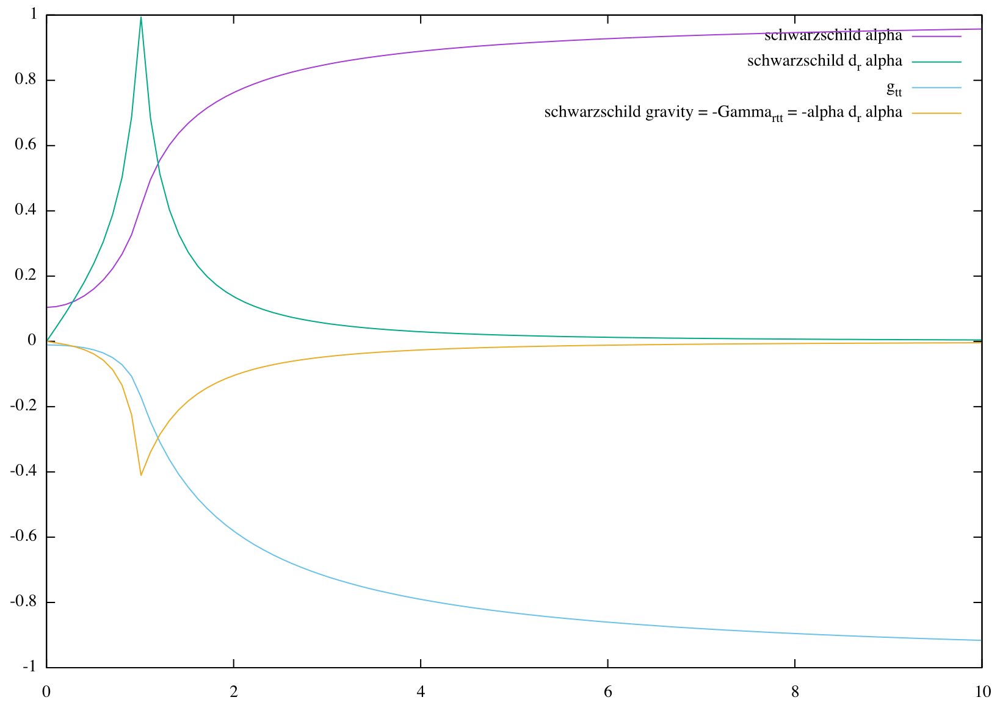
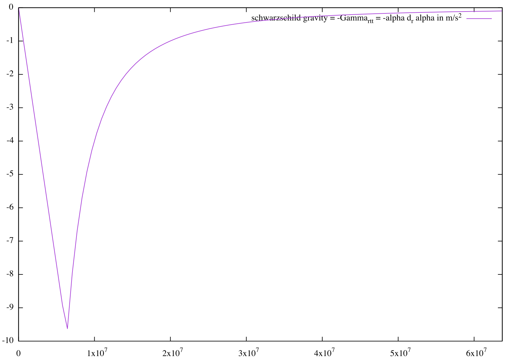

Chris Moore (christopher.e.moore@gmail.com)
Thoughts on antigravity engines
Relativity says the force of gravity on a stationary object is the influence of the connection coefficient, $\ddot{x}^i = -{\Gamma^i}_{tt}$, for $ijk$ indexes spanning space and $t$ denoting time.
Now if the metric has no $g_{kt}$ components (as the Schwarzschild does - as any non-rotating metric does I think?) then this is equal to $-g^{ij} \Gamma_{jtt}$
In ADM representation () of a spacetime metric, $g^{ij} = \gamma^{ij} - \beta^i \beta^j / \alpha^2$, where $\gamma_{ij}$ is the spatial metric, $\gamma^{ij}$ is its inverse, and $\beta_k = g_{kt}$.
Courtesy of $g_{kt} = 0$, $g^{ij}$ is only equal to the $\gamma^{ij}$.
Now to focus on $\Gamma_{jtt}$.
Solve for that and you find $\Gamma_{jtt} = g_{jt,t} - \frac{1}{2} g_{tt,j}$ ... but $g_{jt} = 0$, so we just have $-\frac{1}{2} g_{tt,j}$.
If you use ADM to break down the metric you find $g_{tt} = -\alpha^2 + \beta^k \beta_k$, for $\beta_k = g_{kt}$ ... but this is zero ... so we just have $g_{tt} = -\alpha^2$.
In ADM, $\alpha$ is the lapse, which is the rate at which the time coordinate progresses.
I think it's safe to say it is related to - or it is - the gravitational time dilation, but I have to double check to be sure.
Substitute this into $g_{tt,j}$ and you get $(-\alpha^2)_{,j} = -2 \alpha \alpha_{,j}$.
Substitute and you get $\Gamma_{jtt} = \alpha \alpha_{,j}$
Substitute and you get ${\Gamma^i}_{tt} = \gamma^{ij} \alpha \alpha_{,j}$
Substitute all the way back to find $\ddot{x}^i = -\gamma^{ij} \alpha \alpha_{,j}$.
So gravity is purely the time dilation gradient ... times the lapse function
Here's an exaggerated graph of the lapse function of a Schwarzschild metric of a planet 1m in radius with an average density of $1.3 \cdot 10^{23} \frac{g}{cm^3}$ (or $\frac{1}{10} \frac{m}{m^3}$ in natural units with $G=1$)
... a lot larger than Earth, with $5.51 \frac{g}{cm^3}$

You can see the gradient of the $\alpha(r)$ function points outwards, the negative gradient points inwards.
You can plug in Earth's values and and get back an acceleration of $9.8 \frac{m}{s^2}$ at the surface, with falloff to zero as you go to the middle or to outer space:

So the connection tells us gravity goes downward, into the radial direction, and therefore into the planet.
Likewise the Ricci tensor agrees.
Ricci tensors show how much geodesics contract along a certain direction (as described here: ).
$R(x,x) > 0$ for contracting geodesics, $R(x,x) < 0$ for repelling geodesics.
The stress-energy of an ideal gas is $T_{ab} = diag(\rho, P, P, P)$ for $\rho$ the density and $P$ the pressure.
If you take the Einstein tensor as the trace-reversal of the Ricci tensor: $G_{ab} = R_{ab} - \frac{1}{2} g_{ab} R$,
contract and solve to find the opposite is true as well: $R_{ab} = G_{ab} - \frac{1}{2} g_{ab} G_{cd} g^{cd}$,
then plug in $G_{ab} = 8 \pi T_{ab}$ and solve for the $R_{tt}$ componet, you find:
$R_{tt} = 8 \pi T_{tt} - \frac{1}{2} g_{tt} (G_{cd} g^{cd})$, which, for $g_{ab}$ is approximately $\eta_{ab}$, you get:
$R_{tt} = 4 \pi (\rho + 3 P)$.
So long as density and pressure are positive, $R_{tt}$ is positive, which means geodesics traveling solely in time (i.e. at rest) will be drawn together (courtesy of gravitational attraction).
$R_{xx} = 4 \pi (\rho - P)$
So long as $\rho > P$, $R_{xx}$ is positive, which means geodesics traveling solely in space will be drawn together.
For Earth:
Total average density:
$\rho = 5.5147098661212 \frac{g}{cm^3} = 5.5147098661212 \cdot 1000 \cdot \frac{6.67384 \cdot 10^{-11}}{299792458^2} \frac{1}{m^2} = 4.0950296770075 \cdot 10^{-24} \frac{1}{m^2}$
Sea level atmospheric pressure:
$P = 101325 Pa = 101325 \frac{kg}{m \cdot s^2} = 101325 \frac{6.67384 \cdot 10^{-11}}{299792458^4} \frac{1}{m^2} = 8.3716216274064 \cdot 10^{-40} \frac{1}{m^2}$
Inner core pressure:
$P = 345 \cdot 10^9 Pa = 2.8504411166595 \cdot 10^{-33} \frac{1}{m^2}$
So density always dominates in the matter stress-energy tensor. Ricci scalar curvature is always positive, and spacelike geodesics always converge.
Note that the diagonal components of the stress-energy of an EM field with E along x and B along y are $diag(T_{ab}) = \frac{1}{8\pi}(E^2+B^2, B^2-E^2, E^2-B^2, E^2+B^2)$
The trace of $T_{ab}$ is zero, so the Ricci tensor matches the Einstein tensor, equal to $G_{ab} = 8 \pi T_{ab}$.
So geodesics through time and along the Poynting vector are drawn together.
But geodesics through space, along the electric field, when the electric field is stronger than the magnetic field, geodesics diverge. And along the magnetic field, when the magnetic field is stronger than the electric field, they diverge.
So in the spatial direction at least there is negative Ricci scalar curvature, which means geodesics diverge, but I'm not sure completely how to use this to my advantage, since gravity is only timelike geodesics.
The off-diagonal components of the stress-energy tensor are the Poynting vectors for what it's worth...
I'm still thinking of how to use the EM field to affect the Ricci tensor.
Back to the geodesics.
$\Gamma_{itt} = g_{it,t} - \frac{1}{2} g_{tt,i} = \beta_{i,t} - \frac{1}{2} (-\alpha^2 + \beta^2)_{,i} = \beta_{i,t} + \alpha \alpha_{,i} - \beta^j \beta_{j,i}$
So if you want to cancel the typical gravity contribution of $\alpha \alpha_{,i}$,
you either need a negative counteracting $\beta_{i,t}$ (decrease in $\beta$ over time), or you need a large enough $\beta^j \beta_{j,i}$ (change in $\beta$ along $\beta$ direction).
If $\beta^i$ were the rotation component of the coordinates ... at right angle to radial / in direction of rotation?
... then this means either slow down the rotation, or increase the rotation rates in the direction of rotation ... or both? Can we mix and match, to always be doing either-or, while conserving whatever values go into this?
If you look at the Kerr metric - which is a metric for rotating spherical bodies - you see that the $g_{jt}$ components correspond with rotation.
The Catalogue of Spacetimes () also shows a rotating Schwarzschild metric which had $dt d\phi$ terms added to it, which has the same effect. $g_{it}$ corresponds to a rotating space.
Coincidentally, when White developed off of the Alcubierre drive,
he first criticized that a space ship of a few meters would take a mass of the size of Jupiter to produce the necessary warp in spacetime ...
but then revised his statement that, if the object were rotating sufficiently fast enough, that the massive source object would only have to be a few meters in size, much more practical.
(see )
Never mind White didn't say rotate, he said oscillate. In fact a rotating metric, where beta is rotating, will have grad beta of beta be zero ... i think ... because at least for a rotating v, grad v of v is zero, right?
Because the velocity of the vector is always changing in a direction perpendicular of that vector.
So it has to be oscillating in rotation? This is, coincidentally, what Tajmar recorded here: ), though he wrote it off as a new property of Hydrogen.
SO how to manipulate ${\beta^i}_{,t}$? Well, $\beta^i$ is the rotation / frame-dragging component of the metric.
So if that needs a time derivative, you would have to oscillate the rotation.
But for the record, White's "oscillations" are, in fact, science-fiction, as you can read about here: .
He is calling for oscillations into higher-dimensional planes of existence (distinct of the 3+1 spacetime dimensions).